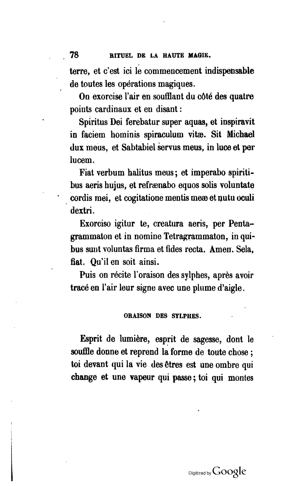
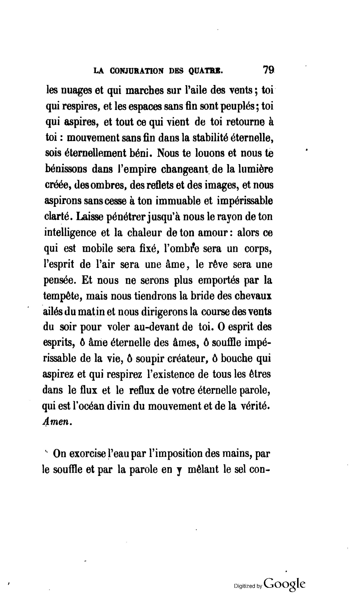

Levi's French
ORAISON DES SYLPHES
DOGME ET RITUEL DE LA HAUTE MAGIE (1861)

{kind=link}
pg 78

{kind=link}
pg 79
| 1 | Esprit de lumière, esprit de sagesse, |
| 2 | dont le souffle donne et reprend la forme de toute chose; |
| 3 | toi devant qui la vie des êtres est une ombre qui change |
| 4 | et une vapeur qui passe; |
| 5 | toi qui montes les nuages et qui marches sur l'aile des vents; |
| 6 | toi qui respires, et les espaces sans fin sont peuplés; |
| 7 | toi qui aspires, et tout ce qui vient de toi retourne à toi: |
| 8 | mouvement sans fin dans la stabilité éternelle, |
| 9 | sois éternellement béni. |
| 10 | Nous te louons et nous te bénissons |
| 11 | dans l'empire changeant de la lumière créée, des ombres, des reflets et des images, |
| 12 | et nous aspirons sans cesse à ton immuable et impérissable clarté. |
| 13 | Laisse pénétrer jusqu'à nous le rayon de ton intelligence et la chaleur de ton amour: |
| 14 | alors ce qui est mobile sera fixé, |
| 15 | l'ombre sera un corps, |
| 16 | l'esprit de l'air sera une âme, |
| 17 | le rêve sera une pensée. |
| 18 | Et nous ne serons plus emportés par la tempête, |
| 19 | mais nous tiendrons la bride des chevaux ailés du matin |
| 20 | et nous dirigerons la course des vents du soir pour voler au-devant de toi. |
| 21 | O esprit des esprits, |
| 22 | ô âme éternelle des âmes, |
| 23 | ô souffle impérissable de la vie, |
| 24 | ô soupir créateur, |
| 25 | ô bouche qui aspirez et qui respirez l'existence de tous les êtres |
| 26 | dans le flux et le reflux de votre éternelle parole, |
| 27 | qui est l'océan divin du mouvement et de la vérité. |
| 28 | Amen. |
| 1 | Spirit of Light, Spirit of Wisdom, |
| 2 | whose breath gives and takes away the form of all things; |
| 3 | Thou before whom the life of every being is a shadow which changes |
| 4 | and a vapor which passes; |
| 5 | Thou who rides the clouds and who walks upon the wings of the wind; |
| 6 | Thou who exhales and endless space is peopled; |
| 7 | Thou who inhales and all that came from Thee returns unto thee; |
| 8 | endless movement in eternal stability, |
| 9 | be Thou eternally blessed. |
| 10 | We praise Thee and we bless Thee |
| 11 | in the changing empire of created light, of shadows, of reflections, and of images, |
| 12 | and we aspire unceasingly to thine immutable and imperishable brilliance. |
| 13 | Let the ray of thine intelligence and the warmth of thy love penetrate unto us: |
| 14 | then what is volatile shall be fixed, |
| 15 | the shadow shall be a body, |
| 16 | the Spirit of Air shall be a Soul, |
| 17 | the dream shall be a thought. |
| 18 | And we shall no longer be swept away by the tempest, |
| 19 | but we shall hold the bridle of the winged steeds of the morning |
| 20 | and we shall direct the course of the evening winds to fly before thee. |
| 21 | O Spirit of Spirits, |
| 22 | O eternal Soul of Souls, |
| 23 | O imperishable Breath of life, |
| 24 | O creative Sigh, |
| 25 | O mouth which inhales and exhales the existence of all beings, |
| 26 | in the ebb and flow of Thine eternal speech, |
| 27 | which is the divine ocean of movement and of truth. |
| 28 | Amen. |
| Sources: |
| green = Mathers. "2 = 9 Theoricus Grade" in The Complete Golden Dawn, vol 6 (Santa Monica, California: Falcon Press, 1987) 115-116. |
| blue = Waite. Transcendental Magic (York Beach, ME: Weiser Books, 2001) 229-230. |
| red = Greer and Mikituk. The Doctrine and Ritual of High Magic (New York, NY: tarcher perigee, 2017) 236-237. |
| black = Our new translation, notes in italic. |
| 1 | Esprit de lumière, esprit de sagesse, |
| Spirit of Light, Spirit of wisdom | |
| Spirit of Light, Spirit of Wisdom, | |
| Spirit of light, spirit of wisdom, | |
| Spirit of Light, Spirit of Wisdom, | |
| 2 | dont le souffle donne et reprend la forme de toute chose; |
| whose breath giveth forth and withdraweth the form of all living things; | |
| Whose breath gives and takes away the form of all things; | |
| whose breath gives and takes away the form of all things; | |
| whose breath gives and takes away the form of all things; | |
| reprend means "to take away", withdraw is not strong enough | |
| 3 | toi devant qui la vie des êtres est une ombre qui change |
| Thou, before whom the Life of Beings is but a shadow which changeth, | |
| Thou before Whom the life of every being is a shadow which transforms | |
| you before whom the life of beings is a shadow which changes | |
| Thou before whom the life of every being is a shadow which changes | |
| Going with Waite on êtres, as it leads to clarity, also this is similar to how it is translated in line 25. translating "change" to "transforms" is too much, it implies an unnecessary level of volition. | |
| 4 | et une vapeur qui passe; |
| and a vapor which passeth, | |
| and a vapour which passes away; | |
| and a vapor which passes; | |
| and a vapor which passes; | |
| "vapeur" could also be "steam" or "cloud", but we use "cloud" as the translation of nuage below. "Passes away" implies death, where the original context is merely that it drifts somewhere else. | |
| 5 | toi qui montes les nuages et qui marches sur l'aile des vents; |
| Thou who mountest upon the clouds, and who walketh upon the wings of the wind, | |
| Thou who ascendest upon the clouds and dost fly upon the wings of the wind; | |
| you who raise the clouds and who walks on the wings of the winds; | |
| Thou who rides the clouds and who walks upon the wings of the wind; | |
| "mountest" is closest to "montes", but it has an awkward connotation in english, "rides" is the closest. "To ascend" is only appropriate for a non-moveable object that you are climbing ie "he ascends the mountain", but in this case he is using the cloud as a vehicle. | |
| 6 | toi qui respires, et les espaces sans fin sont peuplés; |
| Thou who breathest forth Thy Breath, and endless Space is peopled, | |
| Thou who breathest forth and the limitless immensities are peopled; | |
| you who exhale, and then the space without end is peopled; | |
| Thou who exhales and endless space is peopled; | |
| For "respires" "exhales" is much more simple and clear than "who breathest forth Thy Breath". "les espaces sans fin" does directly translate to "space without end", but "endless space" is a better way to say it in english. | |
| 7 | toi qui aspires, et tout ce qui vient de toi retourne à toi: |
| Thou who drawest in Thy breath and all that cometh from Thee returneth unto Thee; | |
| Thou who drawest in and all which came forth from Thee unto Thee returneth; | |
| you who inhale, and then all which comes from you goes back to you: | |
| Thou who inhales and all that came from Thee returns unto thee; | |
| Again "aspires" is better as "inhales" instead of "drawest in Thy breath". | |
| 8 | mouvement sans fin dans la stabilité éternelle, |
| ceaseless Movement in Eternal Stability - | |
| endless movement in the eternal stability, | |
| movement without end in eternal stability, | |
| endless movement in eternal stability, | |
| Again we will prefer "endless" instead of "without end" for "sans fin". | |
| 9 | sois éternellement béni. |
| Be Thou eternally blessed. | |
| be Thou blessed for ever! | |
| be eternally blessed. | |
| be thou eternally blessed. | |
| 10 | Nous te louons et nous te bénissons |
| We praise Thee and we bless Thee | |
| We praise Thee, we bless Thee | |
| We praise you and we bless you | |
| We praise Thee and we bless Thee | |
| 11 | dans l'empire changeant de la lumière créée, des ombres, des reflets et des images, |
| in the changing Empire of created Light, of Shades, of reflections, and of Images | |
| in the fleeting empire of created light, of shadows, reflections and images; | |
| in the ever-changing empire of the created light, of shadows, of reflections, and of images, | |
| in the changing empire of created light, of shadows, of reflections, and of images, | |
| "changeant" is "changing", "fleeting" implies an impermanence of being not in the original meaning. "ever" is probably implied, but unnecessary. | |
| 12 | et nous aspirons sans cesse à ton immuable et impérissable clarté. |
| and we aspire without cessation unto Thy immutable and imperishable brilliance. | |
| and we aspire without ceasing towards Thine immutable and imperishable splendour. | |
| and we aspire ceaselessly to your immutable and imperishable clarity. | |
| and we aspire unceasingly unto thine immutable and imperishable brilliance. | |
| For "sans cesse" we prefer "unceasingly". "clarté" is a difficult word, it means clarity/clearness but also light/illumination, "brilliance" captures these the best. | |
| 13 | Laisse pénétrer jusqu'à nous le rayon de ton intelligence et la chaleur de ton amour: |
| Let the Ray of Thine Intelligence and the warmth of Thy Love penetrate even unto us, | |
| May the ray of Thine intelligence and the warmth of Thy love descend on us: | |
| Allow the ray of your intelligence and the warmth of your love to penetrate all the way to us: | |
| Let the ray of thine intelligence and the warmth of thy love penetrate unto us: | |
| Literally "let penetrate to us, the ray of your intelligence and the warmth of your love". Waite apparently doesn't like the word "penetrate" even though its use here seems to be sunlight penetrating the clouds. Mathers and Greer add a little extra to emphasize a certain distance. | |
| 14 | alors ce qui est mobile sera fixé, |
| then that which is volatile shall be fixed, | |
| that which is volatile shall be fixed, | |
| then that which is mobile shall be fixed, | |
| then what is volatile shall be fixed, | |
| "mobile" is a direct translation, volatile vs fixed is a standard magical dichotomy though. | |
| 15 | l'ombre sera un corps, |
| the shadow shall be a body, | |
| the shadow shall become body, | |
| the shadow shall be a body, | |
| the shadow shall be a body, | |
| 16 | l'esprit de l'air sera une âme, |
| the Spirit of Air shall be a soul, | |
| the spirit of the air shall receive a soul, | |
| the spirit of air shall be a soul, | |
| the Spirit of Air shall be a Soul, | |
| "sera" is "shall be", no idea why Waite used "receive" | |
| 17 | le rêve sera une pensée. |
| the dream shall be a thought. | |
| and dream be thought. | |
| the dream shall be a thought. | |
| the dream shall be a thought. | |
| Again Waite has gone off on his own, though I do like the idea of moving from the singular to the plural, is there only one dream and only one thought? | |
| 18 | Et nous ne serons plus emportés par la tempête, |
| And no longer shall we be swept away by the Tempest, | |
| We shall be swept away no more before the tempest, | |
| And we shall no longer be carried away by the tempest, | |
| And we shall no longer be swept away by the tempest, | |
| "swept" is more evocative than "carried" | |
| 19 | mais nous tiendrons la bride des chevaux ailés du matin |
| but we shall hold the bridles of the Winged Steeds of Dawn, | |
| but shall bridle the winged steeds of the morning | |
| but we shall hold the bridle of the winged horses of the morning | |
| but we shall hold the bridle of the winged steeds of the morning | |
| "tiendrons" is "shall hold", which Waite excludes. "matin" is "morning", "dawn" would be "aube". | |
| 20 | et nous dirigerons la course des vents du soir pour voler au-devant de toi. |
| and we shall direct the course of the Evening Breeze to fly before Thee. | |
| and guide the course of the evening winds, that we may flee into Thy presence. | |
| and we shall direct the flow of the winds of the evening in order to fly up before you. | |
| and we shall direct the course of the evening winds to fly before thee. | |
| Here we have the completion of the rise to power. We are no longer powerless and aimless, but rather have full control over the winds. We are using them to fly with the Sylphes (in front of them no less, as opposed to the side or behind), not merely just to fly into their presence. | |
| 21 | O esprit des esprits, |
| O Spirit of Spirits, | |
| O Spirit of Spirits, | |
| O spirit of spirits, | |
| O Spirit of Spirits, | |
| 22 | ô âme éternelle des âmes, |
| O Eternal Soul of Souls, | |
| O eternal Soul of Souls, | |
| O eternal soul of souls, | |
| O eternal Soul of Souls, | |
| 23 | ô souffle impérissable de la vie, |
| O imperishable breath of Life, | |
| O imperishable Breath of life, | |
| O imperishable breath of life, | |
| O imperishable Breath of life, | |
| 24 | ô soupir créateur, |
| O Creative Sigh, | |
| O Creative Sigh, | |
| O sigh of the creator, | |
| O creative Sigh, | |
| literally "o sigh creator" both sigh and creator are nouns. | |
| 25 | ô bouche qui aspirez et qui respirez l'existence de tous les êtres |
| O mouth which breathest forth and withdrawest the Life of all Beings | |
| O Mouth which dost breathe forth and withdraw the life of all beings | |
| O mouth which inhales and which exhales the existence of all the being | |
| O mouth which inhales and exhales the existence of all beings, | |
| "existence" can be either "existence" or "life". As in line 6 "respirez" is "exhales". | |
| 26 | dans le flux et le reflux de votre éternelle parole, |
| in the flux and Reflux of thine Eternal Word | |
| in the ebb and flow of Thine eternal speech, | |
| with the flux and the reflux of your eternal word, | |
| in the ebb and flow of Thine eternal speech, | |
| ""parole" can also be "word", but speech implies both exhale and inhale | |
| 27 | qui est l'océan divin du mouvement et de la vérité. |
| which is the Divine Ocean of Movement and of Truth. | |
| which is the divine ocean of movement and of truth! | |
| which is the divine ocean of movement and of truth. | |
| which is the divine ocean of movement and of truth. | |
| 28 | Amen. |
| Amen. | |
| Amen. | |
| Amen. | |
| Amen. | |